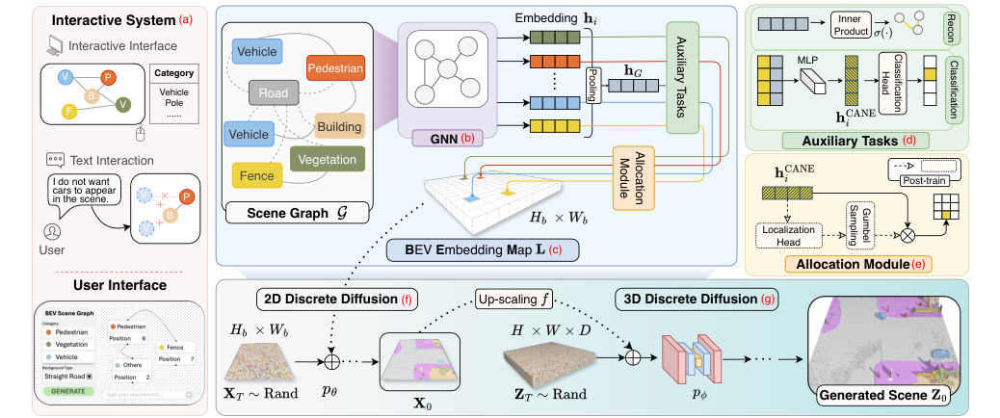
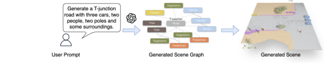
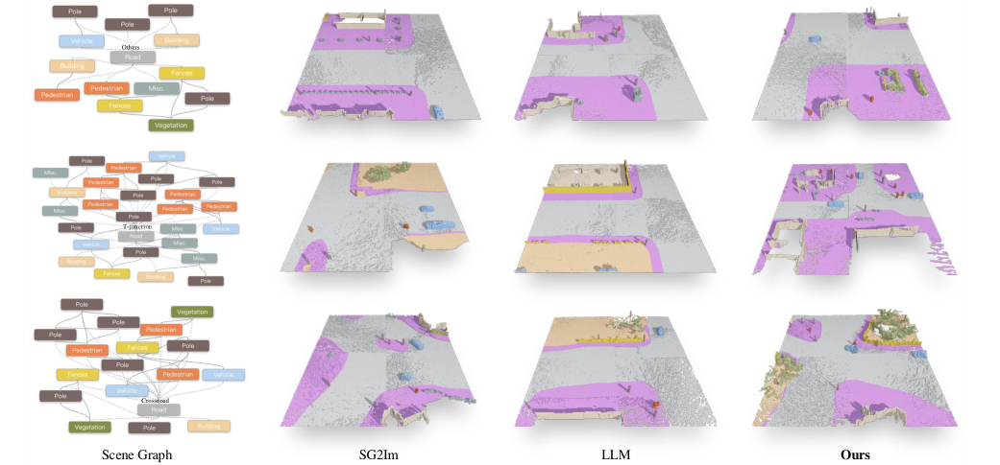
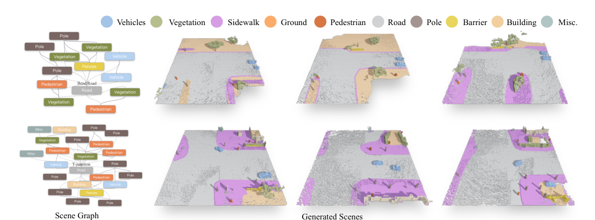
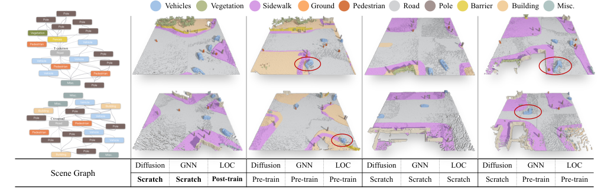
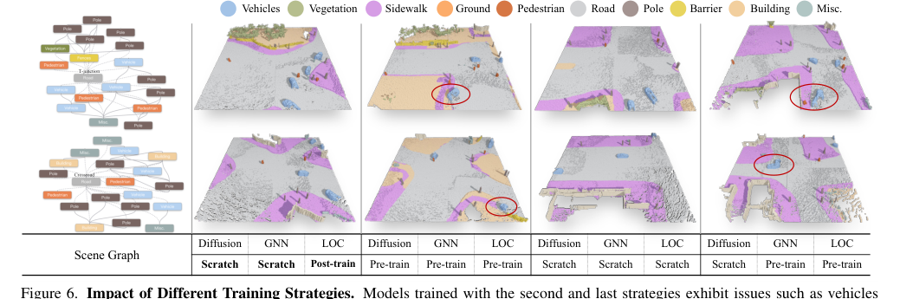

Controllable
简单摘要
这篇工作要解决的问题是：三维场景生成在计算机视觉中至关重要，其应用涵盖自动驾驶、游戏和虚拟宇宙。
对应的核心做法是：当前的方法要么缺乏用户控制，要么依赖于不精确、非直观的条件。
从机制上看，关键设计在于：在这项工作中，我们提出了一种使用场景图（一种可访问的、用户友好的控制格式）来生成户外 3D 场景的方法。
训练或推理层面的重点是：我们开发了一个交互式系统，将稀疏场景图转换为密集的 BEV（鸟瞰图）嵌入图，指导条件扩散模型生成与场景图描述相匹配的 3D 场景。
实验层面的主要信号是：在推理过程中，用户可以轻松创建或修改场景图以生成大规模的室外场景。


简而言之，这篇论文关注的核心是：这篇工作要解决的问题是：三维场景生成在计算机视觉中至关重要，其应用涵盖自动驾驶、游戏和虚拟宇宙。 对应的核心做法是：当前的方法要么缺乏用户控制，要么依赖于不精确、非直观的条件。 从机制上看，关键设计在于：在这项工作中，我们提出了一种使用场景图（一种可访问的、用户友好的控制格式）来生成户外 3D 场…
这篇工作要解决的问题是：3D 场景生成因其创建逼真、物理连贯的 3D 场景的潜力而受到广泛关注。
对应的核心做法是：这些模型提供了一种强大的方法来理解和模拟 3D 世界的复杂性。
从机制上看，关键设计在于：在 3D 场景生成的各种方法中，概率生成模型在最近的进展中显示出了巨大的前景。
训练或推理层面的重点是：然而，这些模型的随机性使得生成过程难以精确控制，强调需要可编辑和可控的生成过程。
实验层面的主要信号是：为了实现可控场景生成，许多方法利用了 2D 条件生成方面的最新进展，例如 DALL-E 和稳定扩散，其中基于自然语言生成高质量图像。
核心创新
综合引言与方法部分，这篇论文的核心创新可以概括为以下几方面：
1）问题定义与研究动机
这篇工作要解决的问题是：3D 场景生成因其创建逼真、物理连贯的 3D 场景的潜力而受到广泛关注。
对应的核心做法是：这些模型提供了一种强大的方法来理解和模拟 3D 世界的复杂性。
从机制上看，关键设计在于：在 3D 场景生成的各种方法中，概率生成模型在最近的进展中显示出了巨大的前景。
训练或推理层面的重点是：然而，这些模型的随机性使得生成过程难以精确控制，强调需要可编辑和可控的生成过程。
实验层面的主要信号是：为了实现可控场景生成，许多方法利用了 2D 条件生成方面的最新进展，例如 DALL-E 和稳定扩散，其中基于自然语言生成高质量图像。
2）方法框架与核心模块
这篇工作要解决的问题是：我们首先在第二节中讨论场景图的制定。
对应的核心做法是：然后我们将在第 2 节中介绍如何根据场景图生成 3D 室外场景。
从机制上看，关键设计在于：我们描述了所提出的方法如何促进 3D 场景的便捷创建。
训练或推理层面的重点是：节点集 \( V \) 由两种类型组成（即 \( V = V_I V_R \)）。
实验层面的主要信号是：每个节点 \( v_i V_I \) 都与一个特征向量 相关联，其中 \( c_i R^d \) 表示维度为 的节点属性，\( p_i R^2 \) 表示指定其在 BEV 图中中心位置的坐标。
3）实验设计与工程价值
这篇工作要解决的问题是：数据准备由于缺乏现有 3D 室外 LiDAR 场景的配对场景图数据，我们从 CarlaSC 数据集中的每个场景生成场景图数据，创建一个名为 CarlaSG 的新数据集。
对应的核心做法是：基于第 2 节中讨论的场景图公式，我们从 CarlaSC 中的每个 3D 语义图中提取 3D 场景图，并将其投影到 2D 上。
从机制上看，关键设计在于：图中提供了 3D 室外场景及其场景图的示例。
训练或推理层面的重点是：值得注意的是，由于人行道和地面的空间分布与道路布局紧密结合，我们将原始 CarlaSC 数据集中的 Ground 和 Sidewalk 类与 Road 类合并，并将它们标记为 Road。
实验层面的主要信号是：我们进一步将道路分为五类。
技术细节
下面按照论文的方法章节结构展开，重点说明模型的关键模块、公式设计和训练策略。
这篇工作要解决的问题是：我们首先在第二节中讨论场景图的制定。
对应的核心做法是：然后我们将在第 2 节中介绍如何根据场景图生成 3D 室外场景。
从机制上看，关键设计在于：我们描述了所提出的方法如何促进 3D 场景的便捷创建。
训练或推理层面的重点是：节点集 \( V \) 由两种类型组成（即 \( V = V_I V_R \)）。
实验层面的主要信号是：每个节点 \( v_i V_I \) 都与一个特征向量 相关联，其中 \( c_i R^d \) 表示维度为 的节点属性，\( p_i R^2 \) 表示指定其在 BEV 图中中心位置的坐标。
$$ \mathbf{h}_i^{\text{CANE}} = \text{MLP}([\mathbf{h}_i;\mathbf{h}_G ]), \mathbf{h}_G= \text{Pooling}(\{\mathbf{h}_i \mid v_i \in \mathcal{V}\}), $$
这条公式用于定义模型中的核心计算关系：左侧给出目标量，右侧由输入与参数共同决定。阅读时可先关注 h、v_i、V 的物理/几何含义，再看它们如何影响训练目标或渲染结果。
$$ \mathcal{L}_a = \text{BCE}(\hat{\mathbf{A}}, \mathbf{A})+ \frac{1}{|\mathcal{V}|} \sum_{i=1}^{|\mathcal{V}|} \text{CE} (y_i, \hat{y}_i), $$
这条公式用于定义模型中的核心计算关系：左侧给出目标量，右侧由输入与参数共同决定。阅读时可先关注 L、A、V、i 的物理/几何含义，再看它们如何影响训练目标或渲染结果。
$$ \hat{\mathbf{A}} = \sigma(\mathbf{h}_G \mathbf{h}_G^\top), \hat{y}_i = \text{Softmax}(\text{MLP} (\mathbf{h}_i^\text{CANE})), $$
这条公式用于定义模型中的核心计算关系：左侧给出目标量，右侧由输入与参数共同决定。阅读时可先关注 A、h、y 的物理/几何含义，再看它们如何影响训练目标或渲染结果。
$$ \mathbf{L} = \sum_{i=1}^{|\mathcal{V}|} \mathcal{M}(\hat{p}_i) \odot \mathbf{h}_i^\text{CANE}, $$
这条公式用于定义模型中的核心计算关系：左侧给出目标量，右侧由输入与参数共同决定。阅读时可先关注 L、i、V、M 的物理/几何含义，再看它们如何影响训练目标或渲染结果。
$$ q(\mathbf{X}_t \mid \mathbf{X}_0) = \operatorname{Cat}(\mathbf{X}_t; \mathbf{P} = \mathbf{X}_0 \bar{\mathbf{Q}}_t), $$
这条公式用于定义模型中的核心计算关系：左侧给出目标量，右侧由输入与参数共同决定。阅读时可先关注 q、X、P、Q 的物理/几何含义，再看它们如何影响训练目标或渲染结果。



把全文方法串起来看，这篇论文的逻辑基本都遵循同一条主线：先把输入组织成更容易处理的表示，再通过模型结构和损失函数把这个表示推向目标输出，最后用可视化与数值实验共同证明该设计有效。
实验结论
实验部分主要回答两个问题：第一，方法是否真的优于已有基线；第二，这种优势来自哪一个设计决策。
这篇工作要解决的问题是：数据准备由于缺乏现有 3D 室外 LiDAR 场景的配对场景图数据，我们从 CarlaSC 数据集中的每个场景生成场景图数据，创建一个名为 CarlaSG 的新数据集。
对应的核心做法是：基于第 2 节中讨论的场景图公式，我们从 CarlaSC 中的每个 3D 语义图中提取 3D 场景图，并将其投影到 2D 上。
从机制上看，关键设计在于：图中提供了 3D 室外场景及其场景图的示例。
训练或推理层面的重点是：值得注意的是，由于人行道和地面的空间分布与道路布局紧密结合，我们将原始 CarlaSC 数据集中的 Ground 和 Sidewalk 类与 Road 类合并，并将它们标记为 Road。
实验层面的主要信号是：我们进一步将道路分为五类。


- 方法在核心指标上的优势与结构设计和训练目标直接相关；
- 消融实验表明，拿掉关键模块后性能与结果质量都有明显回落；
- 论文不仅比较数值，也关注可视化质量、稳定性和泛化能力等更贴近真实使用的信号。
理解评价
这篇工作要解决的问题是：在这项工作中，我们提出了一种集成交互系统、BEV 嵌入图和扩散生成的解决方案，以实现可控的 3D 室外场景生成。
对应的核心做法是：挑战源于复杂的户外景观，具有丰富的信息和结构多样性。
从机制上看，关键设计在于：我们的方法利用场景图将信息从稀疏表示转换为密集表示。
训练或推理层面的重点是：配合交互系统，用户可以直观、简洁地生成自己想要的3D户外场景。
实验层面的主要信号是：比较实验表明，我们的方法实现了更准确的对象数量以及与输入场景图的对齐。
如果把它当成研究参考，建议重点关注三件事：第一，这套方法真正依赖的归纳偏置是什么；第二，实验中真正拉开差距的模块是哪一个；第三，它的局限究竟来自数据、算力还是监督信号本身。
以下相关论文可以作为进一步追踪的入口：